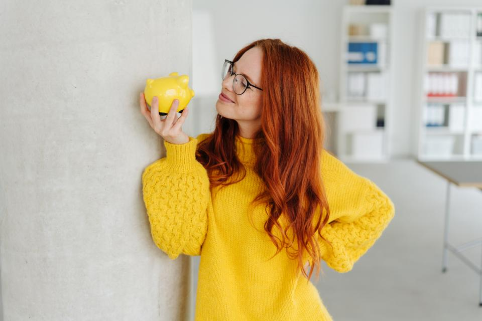
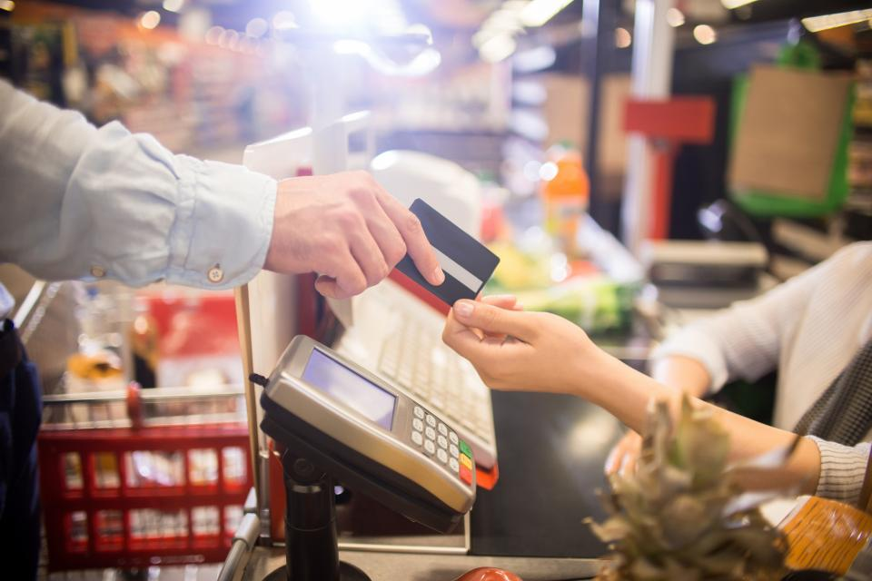

Да си богат не е до това колко са банкнотите в портфейла ти. Нито до сумата в банковата ти сметка. Парите са средство да оцелееш в тоя груб, материален свят. Парите са, за да си купиш смартфон, по който да се чуваш с роднините си онлайн, защото
в днешно време става все по-трудно да ги видиш и да ги прегърнеш с ръцете си. Парите са за да осигуриш прехраната си или в по-добрия случай комфорта за себе си и близките си.
Парите са онова, за което всеки ден се борим. Те задвижват колелото на системата. Те са причината да го има и трудът. Ако всеки разполагаше с колкото си пожелае пари, нямаше да съществува човешкото усилие или поне не като способ за съществуване.
Да, точно това е думата – способ за съществуване.
Човек е силно обвързан с работата си, защото тази работа му осигурява спокойствието. И – разбира се – финансите. Това е един затворен кръг.

Обичай това което правиш
Човек е силно обвързан с работата си, защото тази работа му осигурява спокойствието. И – разбира се – финансите. Това е един затворен кръг.
Работиш, за да изкарваш пари, харчиш пари, за да живееш. Живееш, защото така ти е писано. Живееш, защото такава е съдбата ти. Не можеш да го направиш без храна, без подслон, без вода. Това са тъй наречените първостепенни необходимости за всекиго.
Пиша този текст и в друга връзка – напоследък обществото се раздели на две основни групи покрай коронавируса. Едните казват – мерки трябва да има, за да сме здрави! Другите казват – незабавно махнете тоя локдаун и ни дайте възможност да си изкараме хляба!
- Пиша този текст и в друга връзка – напоследък обществото се раздели на две основни групи покрай коронавируса.
- Едните казват – мерки трябва да има, за да сме здрави! Другите казват – незабавно махнете тоя локдаун и ни дайте възможност да си изкараме хляба!
-
Разликата между първите и вторите е, че едните гладуват наистина. И битието им е кошмар!
- Това са обикновените хора, останали без работа в тая ужасна ситуация. За тях няма хоум офис. Те се превръщат във войници на съдбата.
- И понеже сме граждани на държава, която оправдава всичко с факта, че е бедна, положението ни е такова и за беда надали ще се промени.
- Още нещо – ще ми се да ви обърна внимание за връзката между щастието и парите. Могат ли парите да ни направят щастливи? Мен лично – не. Така съм устроен отвътре.
- Не мисля, че парите могат да донесат щастие. Възможности – да, ала не и щастие. Говоря за истинското, голямо, туптящо като сърдечен мускул в еуфория щастие.
- Това парите не са в състояние да го осигурят. Затова и е безсмислено да ламтим за още.
- Много е лесно да се напише. Въпросът е дали е постижимо. А щастието е толкова просто. И то започва оттам, че се събуждаме сутрин и ни е даден шанса да си поемем въздух.
- Това е
„Намери си работа, която харесваш, и няма да работиш е ден“. Това казва една много хубава поговорка, в която ние категорично вярваме. И не е само тя. Много вече се говори за това, че човек трябва да прави само това, което му носи удоволствие,
че не трябва да се примирява с по-малко от идеалното за себе си и т.н.
- На теория звучи много хубаво. Кой ли не иска да ходи на работа с удоволствие, да разгърне потенциала си да и му плащат за нещо, което всъщност му е приятно да върши?
- Човек не може да не е щастлив в това положение, нали?

Но какво става, ако нямаме шанса, възможността или способностите да работим това, което искаме или просто да сме добри в нещо, което тук и сега не носи пари?
Всеки от нас трябва да работи, но не всеки може да работи нещо вдъхновяващо. Това значи ли, че всеки един от нас, който работи нещо, което не му е по сърце, трябва да е нещастен през по-голямата част от живота си?
Не разбира се, в крайна сметка работата е само осем часа от цели 24. Ето как и къде да откриете щастието, ако работата не ви вдъхновява.